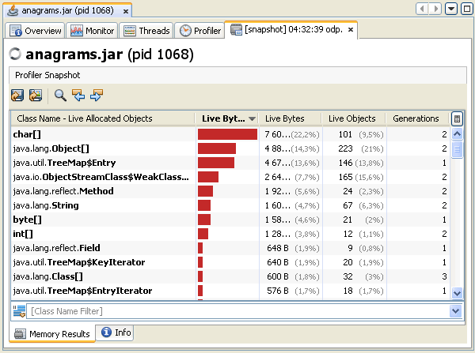
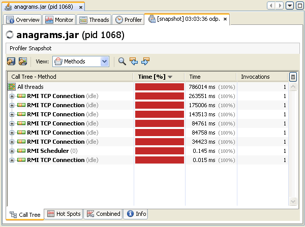
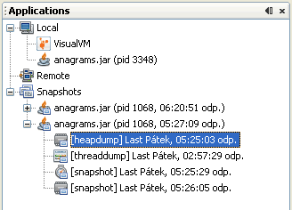

| Documentation Contents |
Working with SnapshotsJava VisualVM enables you to take snapshots of application data and save the snapshots to your local system. Snapshots are a convenient way to capture data about an application because after a snapshot is saved it can be opened and viewed at any time. The target application does not need to be running to view the snapshot. Snapshots can also be sent and viewed by other people. Snapshot TypesSnapshots are basically archives of data captured at a point in time that can then be opened in Java VisualVM. You can take and save the following types of snapshots: Profiler SnapshotsProfiler snapshots capture profiling data at the moment the snapshot is taken. You can take a profiler snapshot at any time during a profiling session. When you take a profiler snapshot, a node representing the snapshot appears below the application node in the Applications window and a temporary snapshot file is written to your local system in the Java VisualVM userdir. Java VisualVM can take the following types of profiler snapshots
Screenshot of memory profiling snapshot Screenshot of CPU profiling snapshot If you want to view a profiler snapshot later, the snapshot must be explicitly saved to your local system, either as a profiler snapshot or archived in an application snapshot. Taking Profiler SnapshotsYou can take a profiler snapshot during a profiling session. When you take a memory or CPU snapshot, the snapshot opens in the application's tab in the main window. To take a snapshot, do one of the following:
The snapshot toolbar enables you to do the following:
Application SnapshotsAn application snapshot captures the collected heap dumps, thread dumps and profiler snapshots of an application at the moment the snapshot is taken. An application snapshot also captures general information about the Java Virtual Machine (JVM). You take an application snapshot by right-clicking an application node in the Applications window and choosing Application Snapshot from the popup menu. Application snapshots are persisted between Java VisualVM sessions. When you take an application snapshot:
Application snapshots are listed under the Snapshots node in the Applications window. Expand the application snapshot node to view the contents of the snapshot. After you take an application snapshot, you can view and modify the contents by expanding the application snapshot node in the Applications window. You can right-click an application snapshot node or any of the items listed under the application snapshot node to open the popup menu where you can choose to open, save, rename and delete the item. You can then save the application snapshot as a single application snapshot archive (.apps) to your local system. The Overview tab of an application snapshot captures data about the JVM software.  |
Copyright © 1993, 2011, Oracle and/or its affiliates. All rights reserved. Please send comments using this Feedback page. |
Java Technology |